Summary
This experiment investigates cdn cache hit optimization. Full factorial with categorical and continuous factors for cache hit ratio and origin bandwidth.
The design varies 4 factors: ttl hours (h), ranging from 1 to 24, cache policy, ranging from lru to lfu, cache size gb (GB), ranging from 50 to 200, and prefetch, ranging from off to on. The goal is to optimize 2 responses: hit ratio (%) (maximize) and origin bandwidth (Gbps) (minimize). Fixed conditions held constant across all runs include origin region = us-east-1, compression = brotli.
A full factorial design was used to explore all 16 possible combinations of the 4 factors at two levels. This guarantees that every main effect and interaction can be estimated independently, at the cost of a larger experiment (16 runs).
Quadratic response surface models were fitted to capture potential curvature and factor interactions. The RSM contour plots below visualize how pairs of factors jointly affect each response.
Key Findings
For hit ratio, the most influential factors were prefetch (40.6%), ttl hours (26.0%), cache policy (24.5%). The best observed value was 99.0 (at ttl hours = 24, cache policy = lfu, cache size gb = 50).
For origin bandwidth, the most influential factors were prefetch (31.4%), cache policy (30.2%), ttl hours (27.1%). The best observed value was 0.98 (at ttl hours = 24, cache policy = lfu, cache size gb = 50).
Recommended Next Steps
- Consider whether any fixed factors should be varied in a future study.
Experimental Setup
Factors
| Factor | Low | High | Unit |
|---|
ttl_hours | 1 | 24 | h |
cache_policy | lru | lfu | |
cache_size_gb | 50 | 200 | GB |
prefetch | off | on | |
Fixed: origin_region = us-east-1, compression = brotli
Responses
| Response | Direction | Unit |
|---|
hit_ratio | ↑ maximize | % |
origin_bandwidth | ↓ minimize | Gbps |
Configuration
{
"metadata": {
"name": "CDN Cache Hit Optimization",
"description": "Full factorial with categorical and continuous factors for cache hit ratio and origin bandwidth"
},
"factors": [
{
"name": "ttl_hours",
"levels": [
"1",
"24"
],
"type": "continuous",
"unit": "h"
},
{
"name": "cache_policy",
"levels": [
"lru",
"lfu"
],
"type": "categorical",
"unit": ""
},
{
"name": "cache_size_gb",
"levels": [
"50",
"200"
],
"type": "continuous",
"unit": "GB"
},
{
"name": "prefetch",
"levels": [
"off",
"on"
],
"type": "categorical",
"unit": ""
}
],
"fixed_factors": {
"origin_region": "us-east-1",
"compression": "brotli"
},
"responses": [
{
"name": "hit_ratio",
"optimize": "maximize",
"unit": "%"
},
{
"name": "origin_bandwidth",
"optimize": "minimize",
"unit": "Gbps"
}
],
"settings": {
"operation": "full_factorial",
"test_script": "use_cases/29_cdn_cache_optimization/sim.sh"
}
}
Experimental Matrix
The Full Factorial Design produces 16 runs. Each row is one experiment with specific factor settings.
| Run | ttl_hours | cache_policy | cache_size_gb | prefetch |
|---|
| 1 | 1 | lfu | 200 | on |
| 2 | 24 | lru | 50 | on |
| 3 | 1 | lfu | 50 | on |
| 4 | 1 | lfu | 200 | off |
| 5 | 24 | lfu | 200 | off |
| 6 | 24 | lru | 200 | off |
| 7 | 24 | lfu | 50 | off |
| 8 | 24 | lru | 50 | off |
| 9 | 1 | lru | 50 | on |
| 10 | 1 | lru | 200 | off |
| 11 | 24 | lfu | 50 | on |
| 12 | 24 | lfu | 200 | on |
| 13 | 1 | lfu | 50 | off |
| 14 | 24 | lru | 200 | on |
| 15 | 1 | lru | 50 | off |
| 16 | 1 | lru | 200 | on |
Step-by-Step Workflow
1
Preview the design
$ python doe.py info --config use_cases/29_cdn_cache_optimization/config.json
2
Generate the runner script
$ python doe.py generate --config use_cases/29_cdn_cache_optimization/config.json \
--output use_cases/29_cdn_cache_optimization/results/run.sh --seed 42
3
Execute the experiments
$ bash use_cases/29_cdn_cache_optimization/results/run.sh
4
Analyze results
$ python doe.py analyze --config use_cases/29_cdn_cache_optimization/config.json
5
Get optimization recommendations
$ python doe.py optimize --config use_cases/29_cdn_cache_optimization/config.json
6
Multi-objective optimization
With 2 competing responses, use --multi to find the best compromise via Derringer–Suich desirability.
$ python doe.py optimize --config use_cases/29_cdn_cache_optimization/config.json --multi
7
Generate the HTML report
$ python doe.py report --config use_cases/29_cdn_cache_optimization/config.json \
--output use_cases/29_cdn_cache_optimization/results/report.html
Features Exercised
| Feature | Value |
|---|
| Design type | full_factorial |
| Factor types | continuous (2), categorical (2) |
| Arg style | double-dash |
| Responses | 2 (hit_ratio ↑, origin_bandwidth ↓) |
| Total runs | 16 |
Analysis Results
Generated from actual experiment runs using the DOE Helper Tool.
Response: hit_ratio
Top factors: prefetch (40.6%), ttl_hours (26.0%), cache_policy (24.5%).
ANOVA
| Source | DF | SS | MS | F | p-value |
|---|
| Source | DF | SS | MS | F | p-value |
| ttl_hours | 1 | 44.5556 | 44.5556 | 0.114 | 0.7499 |
| cache_policy | 1 | 39.3756 | 39.3756 | 0.100 | 0.7643 |
| cache_size_gb | 1 | 5.1756 | 5.1756 | 0.013 | 0.9131 |
| prefetch | 1 | 108.6806 | 108.6806 | 0.277 | 0.6213 |
| ttl_hours*cache_policy | 1 | 321.3056 | 321.3056 | 0.818 | 0.4071 |
| ttl_hours*cache_size_gb | 1 | 233.3256 | 233.3256 | 0.594 | 0.4756 |
| ttl_hours*prefetch | 1 | 115.0256 | 115.0256 | 0.293 | 0.6115 |
| cache_policy*cache_size_gb | 1 | 278.0556 | 278.0556 | 0.708 | 0.4384 |
| cache_policy*prefetch | 1 | 86.0256 | 86.0256 | 0.219 | 0.6594 |
| cache_size_gb*prefetch | 1 | 3.5156 | 3.5156 | 0.009 | 0.9283 |
| Error | 5 | 1962.7731 | 392.5546 | | |
| Total | 15 | 3197.8144 | 213.1876 | | |
Pareto Chart
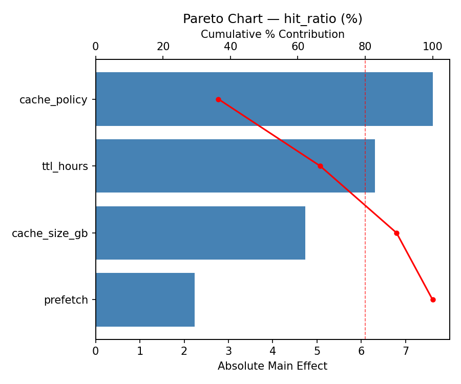
Main Effects Plot
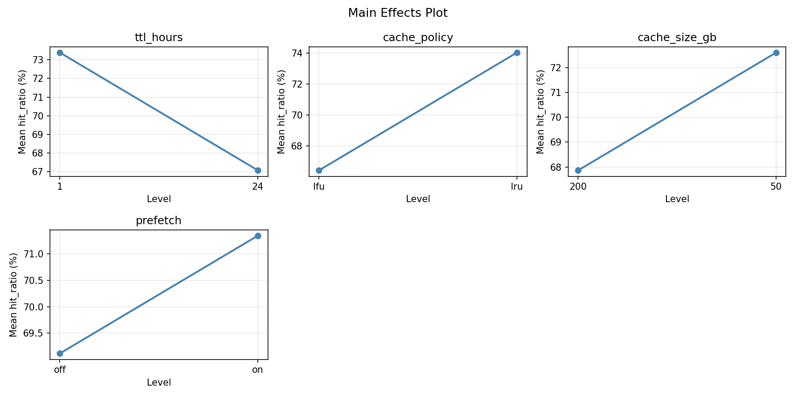
Normal Probability Plot of Effects
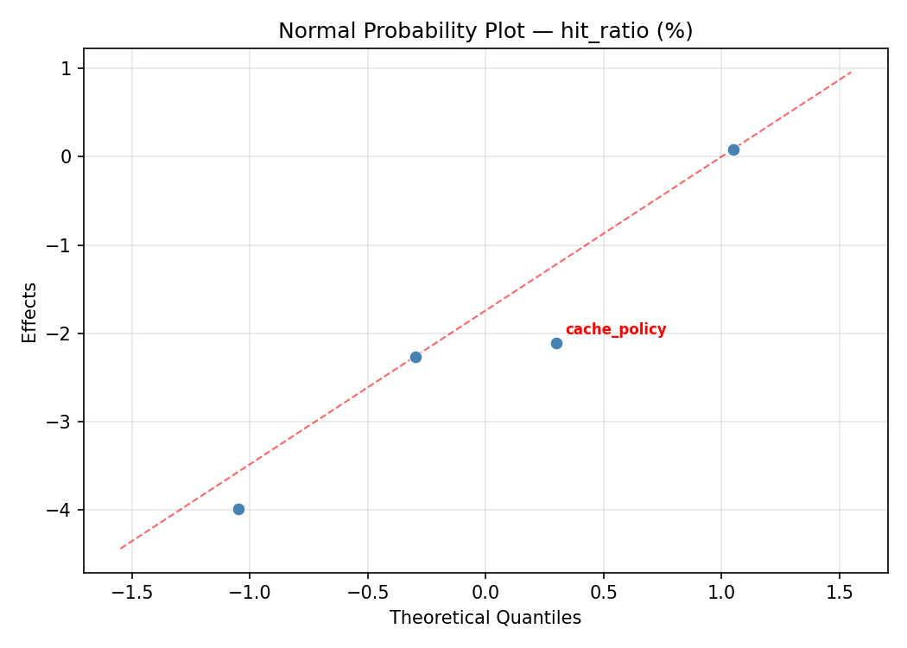
Half-Normal Plot of Effects
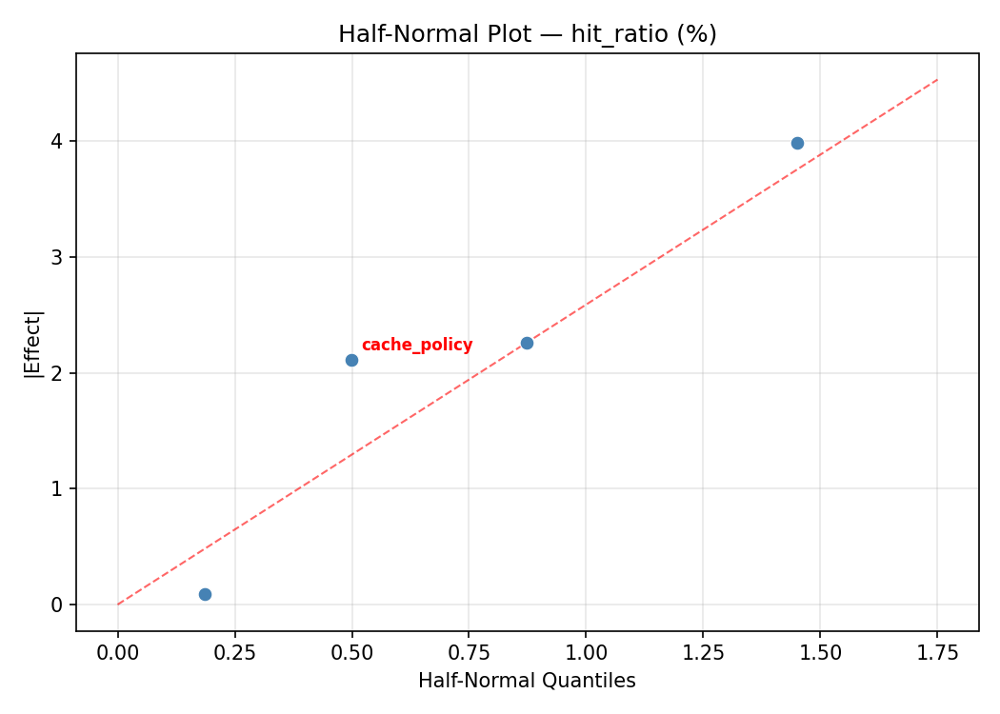
Model Diagnostics
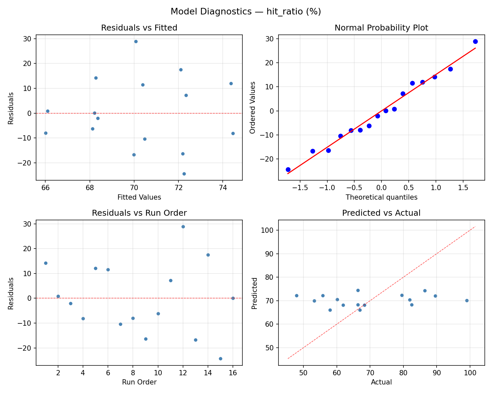
Response: origin_bandwidth
Top factors: prefetch (31.4%), cache_policy (30.2%), ttl_hours (27.1%).
ANOVA
| Source | DF | SS | MS | F | p-value |
|---|
| Source | DF | SS | MS | F | p-value |
| ttl_hours | 1 | 19.6692 | 19.6692 | 0.177 | 0.6911 |
| cache_policy | 1 | 24.4036 | 24.4036 | 0.220 | 0.6587 |
| cache_size_gb | 1 | 3.4040 | 3.4040 | 0.031 | 0.8678 |
| prefetch | 1 | 26.4710 | 26.4710 | 0.239 | 0.6457 |
| ttl_hours*cache_policy | 1 | 121.6609 | 121.6609 | 1.098 | 0.3428 |
| ttl_hours*cache_size_gb | 1 | 57.8360 | 57.8360 | 0.522 | 0.5024 |
| ttl_hours*prefetch | 1 | 62.9642 | 62.9642 | 0.568 | 0.4850 |
| cache_policy*cache_size_gb | 1 | 125.4400 | 125.4400 | 1.132 | 0.3361 |
| cache_policy*prefetch | 1 | 12.6736 | 12.6736 | 0.114 | 0.7490 |
| cache_size_gb*prefetch | 1 | 0.0272 | 0.0272 | 0.000 | 0.9881 |
| Error | 5 | 554.2051 | 110.8410 | | |
| Total | 15 | 1008.7550 | 67.2503 | | |
Pareto Chart
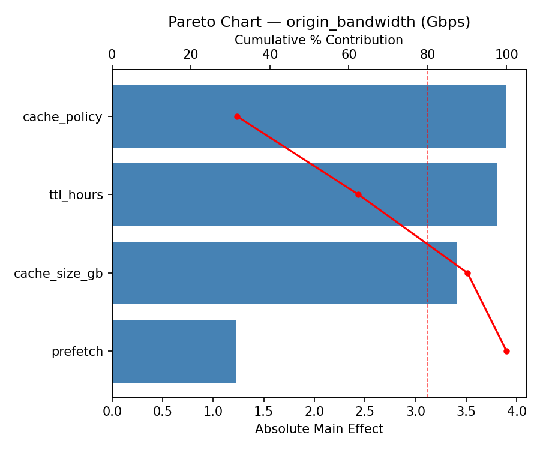
Main Effects Plot
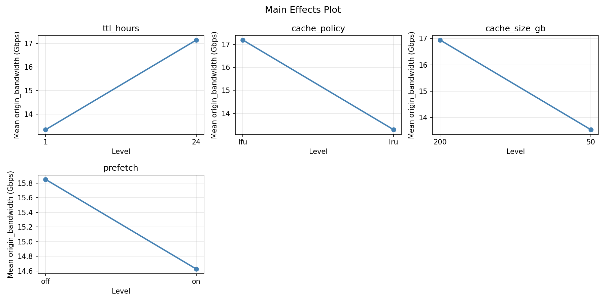
Normal Probability Plot of Effects
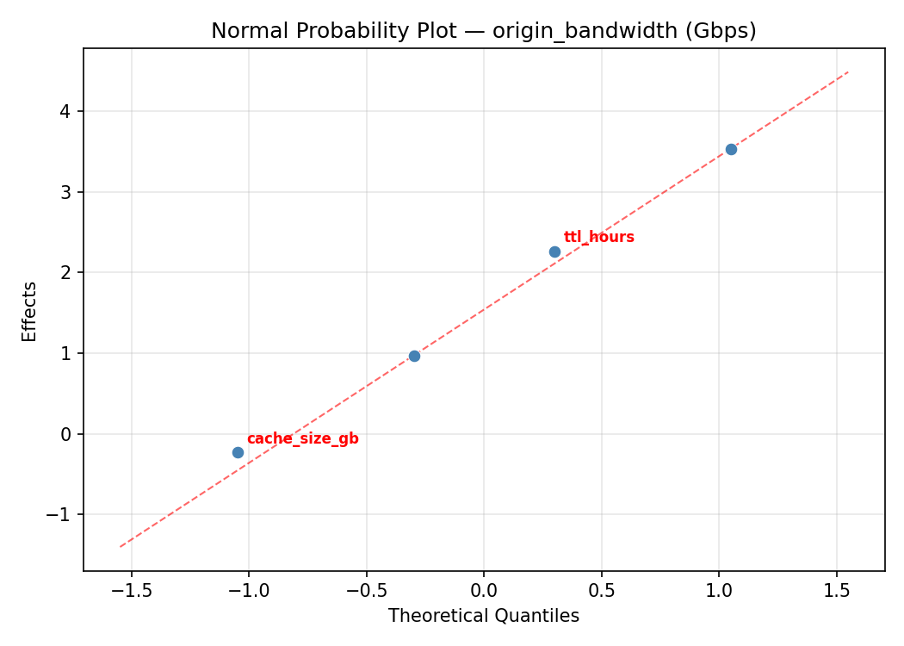
Half-Normal Plot of Effects
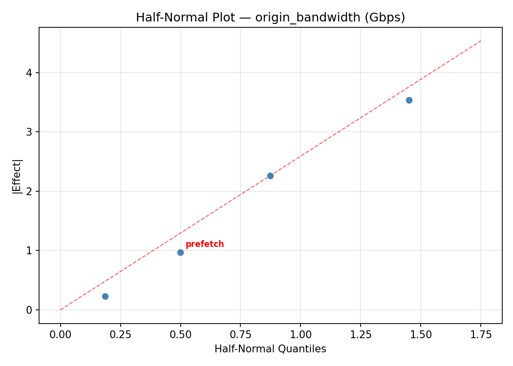
Model Diagnostics
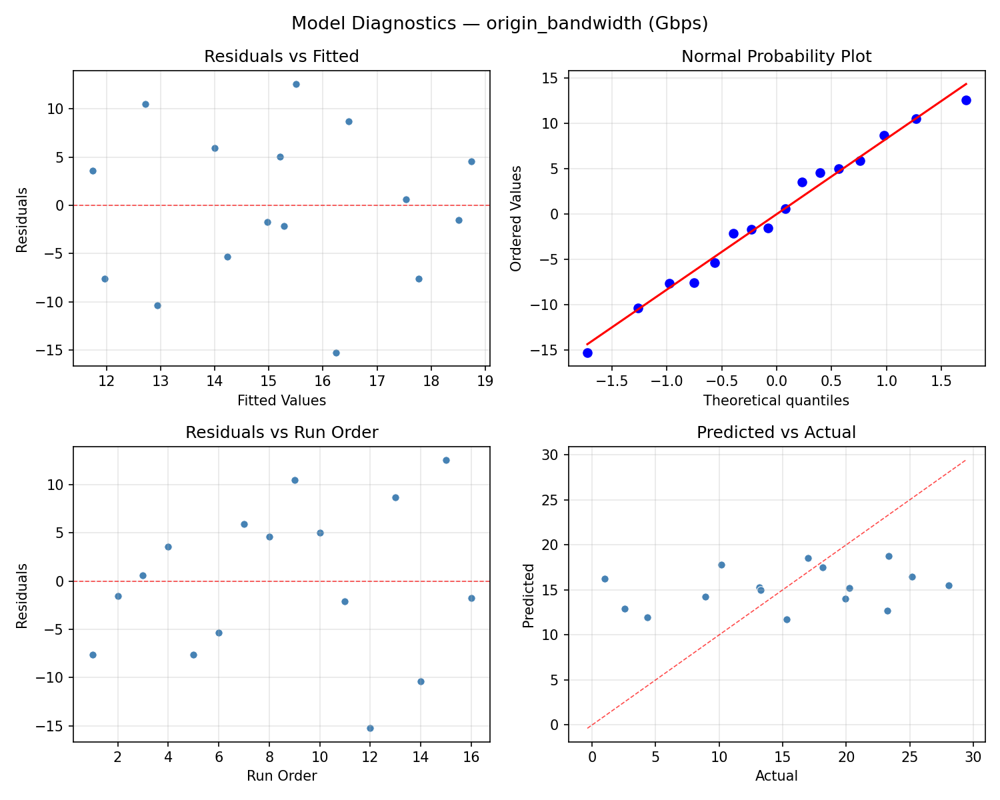
Response Surface Plots
3D surfaces fitted with quadratic RSM. Red dots are observed data points.
hit ratio ttl hours vs cache size gb
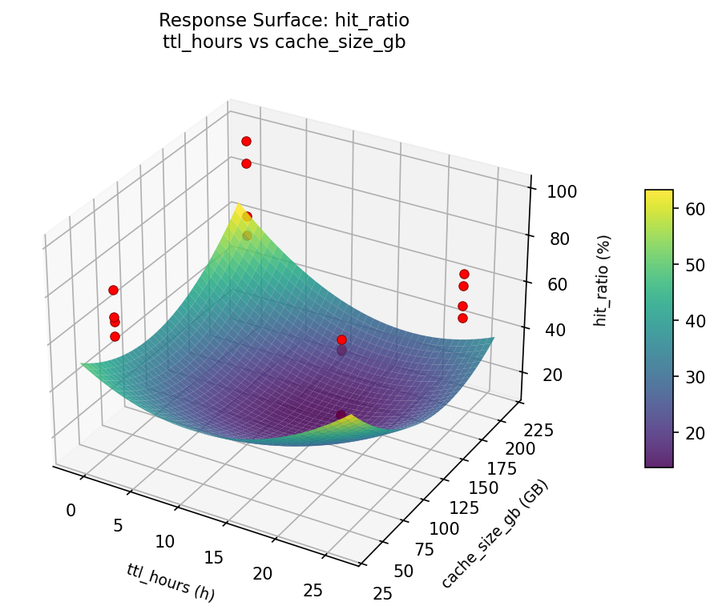
origin bandwidth ttl hours vs cache size gb
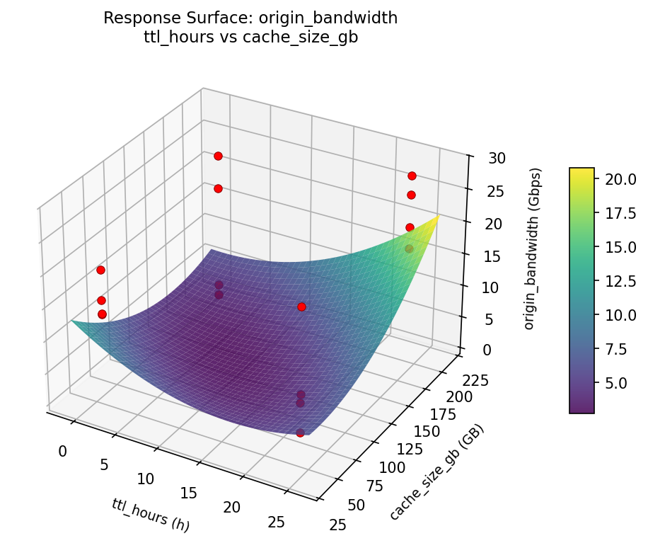
Multi-Objective Optimization
When responses compete, Derringer–Suich desirability finds the best compromise.
Each response is scaled to a 0–1 desirability, then combined via a weighted geometric mean.
Overall Desirability
D = 0.9545
Per-Response Desirability
| Response | Weight | Desirability | Predicted | Dir |
|---|
hit_ratio |
1.0 |
|
99.00 0.9545 99.00 % |
↑ |
origin_bandwidth |
1.5 |
|
0.98 0.9545 0.98 Gbps |
↓ |
Recommended Settings
| Factor | Value |
|---|
ttl_hours | 24 h |
cache_policy | lru |
cache_size_gb | 50 GB |
prefetch | off |
Source: from observed run #12
Trade-off Summary
Sacrifice = how much worse than single-objective best.
| Response | Predicted | Best Observed | Sacrifice |
|---|
origin_bandwidth | 0.98 | 0.98 | +0.00 |
Top 3 Runs by Desirability
| Run | D | Factor Settings |
|---|
| #14 | 0.8538 | ttl_hours=24, cache_policy=lfu, cache_size_gb=50, prefetch=off |
| #5 | 0.7953 | ttl_hours=1, cache_policy=lru, cache_size_gb=50, prefetch=off |
Model Quality
| Response | R² | Type |
|---|
origin_bandwidth | 0.4057 | linear |
Full Multi-Objective Output
============================================================
MULTI-OBJECTIVE OPTIMIZATION
Method: Derringer-Suich Desirability Function
============================================================
Overall desirability: D = 0.9545
Response Weight Desirability Predicted Direction
---------------------------------------------------------------------
hit_ratio 1.0 0.9545 99.00 % ↑
origin_bandwidth 1.5 0.9545 0.98 Gbps ↓
Recommended settings:
ttl_hours = 24 h
cache_policy = lru
cache_size_gb = 50 GB
prefetch = off
(from observed run #12)
Trade-off summary:
hit_ratio: 99.00 (best observed: 99.00, sacrifice: +0.00)
origin_bandwidth: 0.98 (best observed: 0.98, sacrifice: +0.00)
Model quality:
hit_ratio: R² = 0.3901 (linear)
origin_bandwidth: R² = 0.4057 (linear)
Top 3 observed runs by overall desirability:
1. Run #12 (D=0.9545): ttl_hours=24, cache_policy=lru, cache_size_gb=50, prefetch=off
2. Run #14 (D=0.8538): ttl_hours=24, cache_policy=lfu, cache_size_gb=50, prefetch=off
3. Run #5 (D=0.7953): ttl_hours=1, cache_policy=lru, cache_size_gb=50, prefetch=off
Full Analysis Output
=== Main Effects: hit_ratio ===
Factor Effect Std Error % Contribution
--------------------------------------------------------------
prefetch -5.2125 3.6502 40.6%
ttl_hours -3.3375 3.6502 26.0%
cache_policy 3.1375 3.6502 24.5%
cache_size_gb -1.1375 3.6502 8.9%
=== ANOVA Table: hit_ratio ===
Source DF SS MS F p-value
-----------------------------------------------------------------------------
ttl_hours 1 44.5556 44.5556 0.114 0.7499
cache_policy 1 39.3756 39.3756 0.100 0.7643
cache_size_gb 1 5.1756 5.1756 0.013 0.9131
prefetch 1 108.6806 108.6806 0.277 0.6213
ttl_hours*cache_policy 1 321.3056 321.3056 0.818 0.4071
ttl_hours*cache_size_gb 1 233.3256 233.3256 0.594 0.4756
ttl_hours*prefetch 1 115.0256 115.0256 0.293 0.6115
cache_policy*cache_size_gb 1 278.0556 278.0556 0.708 0.4384
cache_policy*prefetch 1 86.0256 86.0256 0.219 0.6594
cache_size_gb*prefetch 1 3.5156 3.5156 0.009 0.9283
Error 5 1962.7731 392.5546
Total 15 3197.8144 213.1876
=== Interaction Effects: hit_ratio ===
Factor A Factor B Interaction % Contribution
------------------------------------------------------------------------
ttl_hours cache_policy -8.9625 25.0%
cache_policy cache_size_gb 8.3375 23.2%
ttl_hours cache_size_gb -7.6375 21.3%
ttl_hours prefetch -5.3625 14.9%
cache_policy prefetch -4.6375 12.9%
cache_size_gb prefetch 0.9375 2.6%
=== Summary Statistics: hit_ratio ===
ttl_hours:
Level N Mean Std Min Max
------------------------------------------------------------
1 8 71.9000 15.5498 53.3000 99.0000
24 8 68.5625 14.4454 47.9000 89.6000
cache_policy:
Level N Mean Std Min Max
------------------------------------------------------------
lfu 8 68.6625 13.9976 53.3000 89.6000
lru 8 71.8000 15.9772 47.9000 99.0000
cache_size_gb:
Level N Mean Std Min Max
------------------------------------------------------------
200 8 70.8000 11.6346 55.8000 89.6000
50 8 69.6625 17.9089 47.9000 99.0000
prefetch:
Level N Mean Std Min Max
------------------------------------------------------------
off 8 72.8375 15.0009 58.0000 99.0000
on 8 67.6250 14.7063 47.9000 86.4000
=== Main Effects: origin_bandwidth ===
Factor Effect Std Error % Contribution
--------------------------------------------------------------
prefetch 2.5725 2.0502 31.4%
cache_policy -2.4700 2.0502 30.2%
ttl_hours 2.2175 2.0502 27.1%
cache_size_gb 0.9225 2.0502 11.3%
=== ANOVA Table: origin_bandwidth ===
Source DF SS MS F p-value
-----------------------------------------------------------------------------
ttl_hours 1 19.6692 19.6692 0.177 0.6911
cache_policy 1 24.4036 24.4036 0.220 0.6587
cache_size_gb 1 3.4040 3.4040 0.031 0.8678
prefetch 1 26.4710 26.4710 0.239 0.6457
ttl_hours*cache_policy 1 121.6609 121.6609 1.098 0.3428
ttl_hours*cache_size_gb 1 57.8360 57.8360 0.522 0.5024
ttl_hours*prefetch 1 62.9642 62.9642 0.568 0.4850
cache_policy*cache_size_gb 1 125.4400 125.4400 1.132 0.3361
cache_policy*prefetch 1 12.6736 12.6736 0.114 0.7490
cache_size_gb*prefetch 1 0.0272 0.0272 0.000 0.9881
Error 5 554.2051 110.8410
Total 15 1008.7550 67.2503
=== Interaction Effects: origin_bandwidth ===
Factor A Factor B Interaction % Contribution
------------------------------------------------------------------------
cache_policy cache_size_gb -5.6000 27.0%
ttl_hours cache_policy 5.5150 26.6%
ttl_hours prefetch 3.9675 19.1%
ttl_hours cache_size_gb 3.8025 18.3%
cache_policy prefetch 1.7800 8.6%
cache_size_gb prefetch -0.0825 0.4%
=== Summary Statistics: origin_bandwidth ===
ttl_hours:
Level N Mean Std Min Max
------------------------------------------------------------
1 8 14.1300 8.5118 0.9800 25.1900
24 8 16.3475 8.2974 2.5700 28.0800
cache_policy:
Level N Mean Std Min Max
------------------------------------------------------------
lfu 8 16.4737 8.2488 2.5700 25.1900
lru 8 14.0038 8.5193 0.9800 28.0800
cache_size_gb:
Level N Mean Std Min Max
------------------------------------------------------------
200 8 14.7775 6.5557 2.5700 23.2300
50 8 15.7000 10.0321 0.9800 28.0800
prefetch:
Level N Mean Std Min Max
------------------------------------------------------------
off 8 13.9525 8.2798 0.9800 23.3300
on 8 16.5250 8.4718 4.3400 28.0800
Optimization Recommendations
=== Optimization: hit_ratio ===
Direction: maximize
Best observed run: #12
ttl_hours = 24
cache_policy = lfu
cache_size_gb = 50
prefetch = off
Value: 99.0
RSM Model (linear, R² = 0.3143, Adj R² = 0.0649):
Coefficients:
intercept +70.2313
ttl_hours +0.0937
cache_policy +1.0813
cache_size_gb -5.6688
prefetch -5.4313
RSM Model (quadratic, R² = 0.6265, Adj R² = -4.6028):
Coefficients:
intercept +14.0462
ttl_hours +0.0938
cache_policy +1.0812
cache_size_gb -5.6688
prefetch -5.4313
ttl_hours*cache_policy -0.4063
ttl_hours*cache_size_gb -3.2563
ttl_hours*prefetch +2.1313
cache_policy*cache_size_gb +2.3563
cache_policy*prefetch +1.2688
cache_size_gb*prefetch +6.3188
ttl_hours^2 +14.0463
cache_policy^2 +14.0463
cache_size_gb^2 +14.0463
prefetch^2 +14.0463
Curvature analysis:
cache_size_gb coef=+14.0463 convex (has a minimum)
prefetch coef=+14.0463 convex (has a minimum)
ttl_hours coef=+14.0463 convex (has a minimum)
cache_policy coef=+14.0463 convex (has a minimum)
Notable interactions:
cache_size_gb*prefetch coef=+6.3188 (synergistic)
ttl_hours*cache_size_gb coef=-3.2563 (antagonistic)
cache_policy*cache_size_gb coef=+2.3563 (synergistic)
ttl_hours*prefetch coef=+2.1313 (synergistic)
cache_policy*prefetch coef=+1.2688 (synergistic)
ttl_hours*cache_policy coef=-0.4063 (antagonistic)
Predicted optimum (from linear model, at observed points):
ttl_hours = 24
cache_policy = lru
cache_size_gb = 50
prefetch = off
Predicted value: 82.5063
Surface optimum (via L-BFGS-B, linear model):
ttl_hours = 24
cache_policy = lfu
cache_size_gb = 50
prefetch = off
Predicted value: 82.5063
Model quality: Weak fit — consider adding center points or using a different design.
Factor importance:
1. cache_size_gb (effect: 11.3, contribution: 46.2%)
2. prefetch (effect: -10.9, contribution: 44.2%)
3. cache_policy (effect: 2.2, contribution: 8.8%)
4. ttl_hours (effect: 0.2, contribution: 0.8%)
=== Optimization: origin_bandwidth ===
Direction: minimize
Best observed run: #12
ttl_hours = 24
cache_policy = lfu
cache_size_gb = 50
prefetch = off
Value: 0.98
RSM Model (linear, R² = 0.2759, Adj R² = 0.0125):
Coefficients:
intercept +15.2388
ttl_hours -0.5300
cache_policy -1.1750
cache_size_gb +3.2875
prefetch +2.2188
RSM Model (quadratic, R² = 0.5538, Adj R² = -5.6936):
Coefficients:
intercept +3.0478
ttl_hours -0.5300
cache_policy -1.1750
cache_size_gb +3.2875
prefetch +2.2188
ttl_hours*cache_policy +0.1938
ttl_hours*cache_size_gb +2.2388
ttl_hours*prefetch -1.2500
cache_policy*cache_size_gb -1.2163
cache_policy*prefetch -0.5825
cache_size_gb*prefetch -3.0150
ttl_hours^2 +3.0478
cache_policy^2 +3.0478
cache_size_gb^2 +3.0478
prefetch^2 +3.0478
Curvature analysis:
ttl_hours coef=+3.0478 convex (has a minimum)
cache_policy coef=+3.0478 convex (has a minimum)
cache_size_gb coef=+3.0478 convex (has a minimum)
prefetch coef=+3.0478 convex (has a minimum)
Notable interactions:
cache_size_gb*prefetch coef=-3.0150 (antagonistic)
ttl_hours*cache_size_gb coef=+2.2388 (synergistic)
ttl_hours*prefetch coef=-1.2500 (antagonistic)
cache_policy*cache_size_gb coef=-1.2163 (antagonistic)
cache_policy*prefetch coef=-0.5825 (antagonistic)
Predicted optimum (from linear model, at observed points):
ttl_hours = 1
cache_policy = lfu
cache_size_gb = 200
prefetch = on
Predicted value: 22.4500
Surface optimum (via L-BFGS-B, linear model):
ttl_hours = 24
cache_policy = lfu
cache_size_gb = 50
prefetch = off
Predicted value: 8.0275
Model quality: Weak fit — consider adding center points or using a different design.
Factor importance:
1. cache_size_gb (effect: -6.6, contribution: 45.6%)
2. prefetch (effect: 4.4, contribution: 30.8%)
3. cache_policy (effect: -2.3, contribution: 16.3%)
4. ttl_hours (effect: -1.1, contribution: 7.3%)